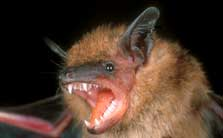

Bats are nature's most effective controllers of flying insectpopulations. For example, the big brown bat?common throughout theUnited States?can consume up to 1,200 mosquitoes an hour.Unfortunately, most of the 46 bat species that live in the UnitedStates and Canada have experienced serious population declines overthe past half century, and six are considered endangered. Here aresome ways you can protect bats, and have them control mosquitoes inyour back yard.
1. Avoid caves and abandoned mines.
The primary cause of bats' decline is the loss of hibernacula,places in which bats can hibernate without human disturbance. Ifyou know of a cave or abandoned mine where bats live, stay awayfrom it?particularly during late summer through spring?and reportits presence to wildlife officials for possible protection.
2. Turn off bug zappers.
The biting insects that zappers supposedly control actually aren'tattracted to light. Instead, moths and other insects on bats' dietsare the zappers' victims. Bats terminate mosquitoes and other pestinsects much more efficiently, and bats are far more likely to beattracted to your yard if there are moths.
3. Put up bat houses.
About a dozen bat species are attracted to well-designed bathouses. Such houses provide critical shelter, particularly in thespring and summer when mother bats need safe places to raise theiryoung. Use a properly constructed bat house and install the houseat least 10 feet above the ground in a place that will receive theright amount of solar exposure for your region. You'll find moreinformation on bat houses, and plans for building your own, fromthe following bat groups:
|
 |
|
|